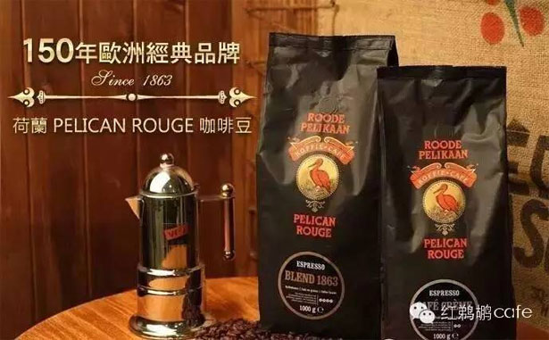

帮助
使用帮助
2017-03-20

我们的故事发源于 150 多年前 19 世纪的安特惠普。1863年，Joseph van Leckwyck 和他的儿子在 Broederminstraat52 建立了一家名为Continentale Maatschappij voor hetBranden van Koffie (大陆咖啡烘焙社) 的咖啡烘焙厂在那里，他们学习掌握烘焙艺术，并采用最初的商标“Roode Pelikaan”为新一代的咖啡爱好者们生产出了高品质、价格实惠的咖啡。这样做的过程中，这家由贸易商转型的烘焙商——凭一己之力就决定了比利时咖啡行业的发展方向。1899 年，Pelican Rouge 开始了它征服欧洲的历程。